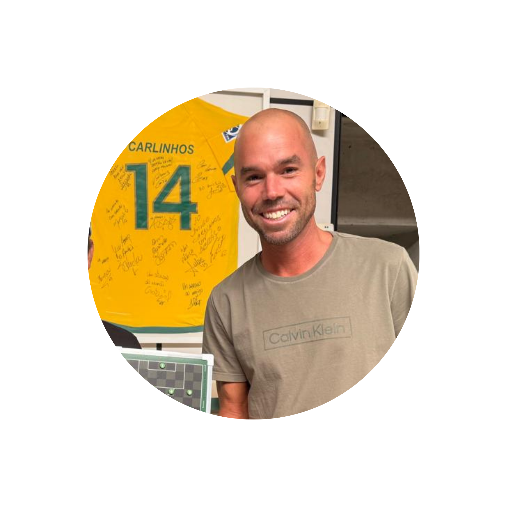

Cada movimento importa. Posicionamento, leitura de jogo e tomada de decisão definem a vitória.
Um campo pensado para simular zonas táticas reais do futebol, trazendo profundidade estratégica a cada partida.
Ideal para jogadores que gostam de desafiar a mente, competir e evoluir a cada jogo.

"Quem vence sem risco, triunfa sem glória 👊🤝. Um projeto que coloca a sua inteligência à prova em cada lance"
"Fantástico! O Board Manager tira o atleta da distração e o faz pensar o jogo estrategicamente."

"O jogo é muito bom para compreender a parte tática! É o tipo de desafio que te prende, dá vontade de jogar o dia todo."
"O jogo desenvolve o que o atleta mais precisa: tomada de decisão e visão tática. É a ferramenta perfeita para quem quer pensar o jogo em outro nível."

"O Board Manager nasceu em 2020 para ensinar meus atletas a pensar o jogo. O impacto foi tão imediato que eles passaram a se desafiar em duelos táticos fora de campo. Ao ver essa evolução cognitiva, percebi que precisávamos entregar essa ferramenta para todos que buscam tomadas de decisão de elite."
Cargo/Área: Idealizador da Metodologia e Fundador do Board Manager.

"O Board Manager possui uma lógica sistêmica blindada que espelha a complexidade do futebol moderno. Diferente de pranchetas estáticas, ele funciona como um organismo vivo de tomada de decisão, sendo indispensável para o refinamento tático de elite."
Cargo/Área: Treinador de Futebol Profissional (Licença A CBF) e Graduado em Educação Física.

"O Board Manager é uma ferramenta de elite que preenche a lacuna entre a teoria e a prática de campo. Sua fundamentação lógica é inatacável e essencial para o desenvolvimento do QI tático e da neuroplasticidade em atletas."
Cargo/Área: Desenvolvedor de Sistemas e Prof. de Educação Física (Especialista em Desempenho Humano).